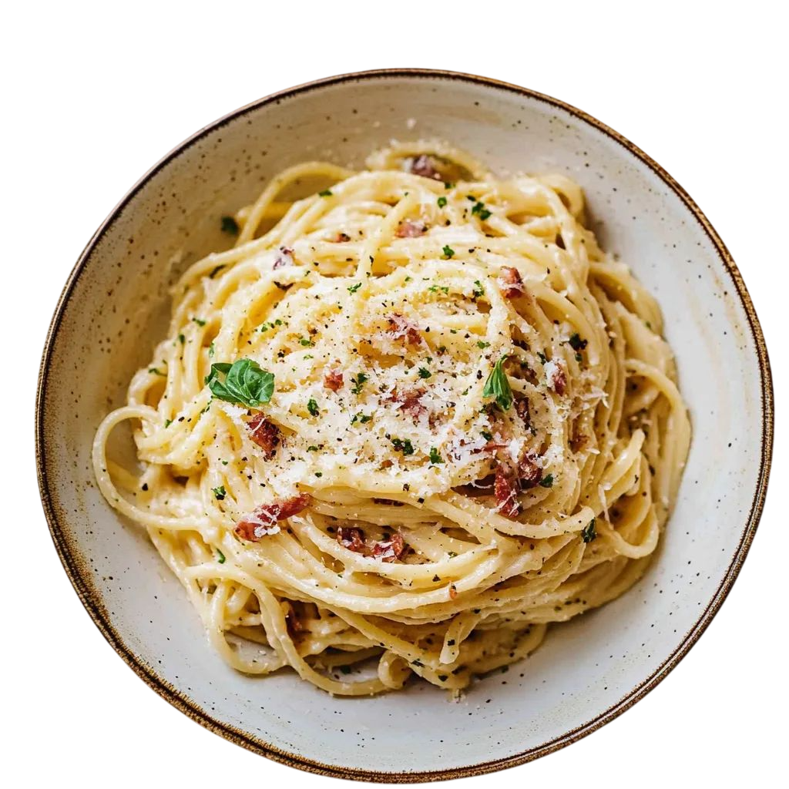

Espaguetis a la Carbonara
La receta romana clásica que usa solo cuatro ingredientes esenciales: huevo, queso curado, pimienta y guanciale o panceta. ¡Un plato cremoso y rápido!
⏱️ Tiempo total: 25 min
🍴 Porciones: 2
💪 Dificultad: Media

Ingredientes
- 200g de espaguetis o bucatini.
- 100g de Guanciale o Panceta curada (cortada en cubos).
- 2 yemas de huevo (a temperatura ambiente).
- 1 huevo entero (a temperatura ambiente).
- 50g de queso Pecorino Romano rallado (esencial).
- Pimienta negra recién molida, abundante.
- Sal para el agua de cocción.
Preparación
- Paso 1: Cocer la Pasta. Pon a hervir abundante agua con sal. Cocina la pasta hasta que esté al dente. Reserva al menos una taza (250ml) del agua de cocción antes de escurrir.
- Paso 2: Freír la Grasa. En una sartén sin aceite, cocina el guanciale (o panceta) a fuego medio-bajo hasta que esté crujiente y haya soltado gran parte de su grasa. Retira el guanciale de la sartén y reserva. Deja la grasa caliente en la sartén.
- Paso 3: Preparar la Crema. En un tazón, mezcla las dos yemas, el huevo entero y el Pecorino Romano. Muele abundante pimienta negra fresca sobre la mezcla. Bate rápidamente hasta obtener una pasta espesa.
- Paso 4: Mezclar (El momento clave). Retira la sartén con la grasa del fuego. Escurre la pasta y añádela inmediatamente a la sartén. Mueve la pasta rápidamente. Ahora, vierte la mezcla de huevo y queso en la pasta. Remueve sin parar, añadiendo gradualmente pequeñas cucharadas del agua de cocción caliente (no hirviendo) hasta obtener una salsa cremosa que cubra los espaguetis. El calor residual cocina los huevos y el almidón del agua crea la emulsión.
- Paso 5: Servir. Incorpora la mayor parte del guanciale crujiente. Sirve inmediatamente con más pimienta recién molida y el resto del guanciale por encima.